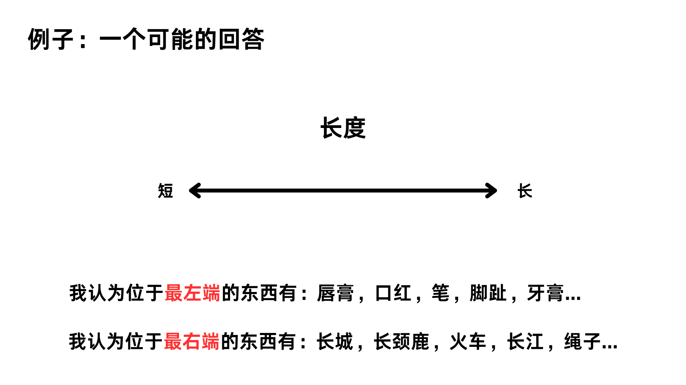

<!DOCTYPE html>
<html>
    <head>
    <title>My experiment</title>
        <script src="https://unpkg.com/jspsych@8.2.1"></script>
        <script src="https://unpkg.com/@jspsych/plugin-html-keyboard-response@2.1.0"></script>
        <script src="https://unpkg.com/@jspsych/plugin-preload@2.1.0"></script>
        <script src="https://unpkg.com/@jspsych/plugin-image-keyboard-response@2.1.0"></script>
        <script src="https://unpkg.com/@jspsych/plugin-survey-text@2.1.0"></script>
        <link href="https://unpkg.com/jspsych@8.2.1/css/jspsych.css" rel="stylesheet" type="text/css" />
    </head>
  <body></body>
  <script>

    // 下载函数（放在jsPsych初始化之前）
    function downloadCSV() {
        const csvData = jsPsych.data.get().csv();
        const BOM = "\uFEFF";
        const blob = new Blob([BOM + csvData], { type: 'text/csv;charset=utf-8;' });
        const link = document.createElement("a");
        const url = URL.createObjectURL(blob);
        const filename = `experiment-data_${Date.now()}.csv`;
        link.href = url;
        link.download = filename;
        link.style.visibility = 'hidden';
        document.body.appendChild(link);
        link.click();
        document.body.removeChild(link);
    }
    
    var jsPsych = initJsPsych({
        on_finish: function() {
            setTimeout(() => {
                downloadCSV();
                alert('实验已完成，数据文件已自动下载');
            },
            {show_progress_bar: true}, 1000);
        }
    })
    var timeline = []
    
    var preload = {
        type: jsPsychPreload,
        images: ['img/1.png','img/2.png','img/3.png','img/4.png','img/5.png','img/6.png',
            'img/7.png','img/8.png','img/9.png','img/10.png','img/11.png','img/12.png','img/13.png',
            'img/14.png','img/15.png','img/16.png','img/17.png','img/18.png','img/19.png','img/20.png',
            'img/21.png'
        ],
        record_data: false
        }
    timeline.push(preload)

    var welcome = {
        type: jsPsychHtmlKeyboardResponse,
        stimulus: "欢迎来到本词汇填写实验，按下任意键以继续",
        record_data: false
        }
    timeline.push(welcome)

    var basic_info = {
        type: jsPsychSurveyText,
        questions: [
            {prompt: '您的姓名：', name: 'Name', required: true},
            {prompt: '您的年龄：', name: 'Age', required: true},
            {prompt: '您的性别', name: 'Gender', required: true}
        ]
        }
    timeline.push(basic_info)

    var instructions = {
        type: jsPsychHtmlKeyboardResponse,
        stimulus: `
            <p>在本实验中，将会出现不同的维度，每个维度左右两侧的词代表该维度左右两端的描述</p>
            <p>你的任务是填写你认为位于维度<strong>最左端</strong>、<strong>最右端</strong>的东西, 
            每一端需要填写1到3词(每个词1-3个字)，词与词之间用逗号分隔.</p>
            <p>答案没有正误之分，根据你自己的<strong>想法和知识</strong>填写即可</p>
            <div style='width: 700px;'>
            </div>
            <p>按下任意键以查看某个人的填写示例</p>
        `,
        record_data: false,
        post_trial_gap: 1000
        }
    timeline.push(instructions)
    
    var example = {
        type: jsPsychHtmlKeyboardResponse,
        stimulus: `
            <p><strong>答案无正误之分，按照您的理解填写即可</strong></p>
            <div style='width: 700px;'>
            </img>
            </div>
            <p>当你理解示例之后，按下任意键以继续</p>
        `,
        record_data: false,
        post_trial_gap: 1000
        }
    timeline.push(example)

    // 创建包含所有图片编号的数组（2-21，因为1号是示例）
    const imageNumbers = Array.from({length: 20}, (_, i) => i + 2);
    
    // 随机打乱图片顺序
    const shuffledImages = jsPsych.randomization.shuffle(imageNumbers);

    // 创建最终的timeline数组
    let finalTrials = [];

    // 为每张图片创建一对trial（左端和右端）
    shuffledImages.forEach(imgNum => {
        // 创建左右端trial对
        let trialPair = [];
        
        // 左端trial
        var leftTrial = {
            type: jsPsychSurveyText,
            preamble: undefined, // 稍后设置
            questions: [
                {
                    prompt: '请填写您认为位于<strong>最左端</strong>的东西：', 
                    required: true,
                    name: 'left_words'  // 给回答添加名称
                }
            ],
            data: {
                image_number: imgNum,
                position: 'left'  // 改为'position'而非'trial_type'
            }
        }
        
        // 右端trial
        var rightTrial = {
            type: jsPsychSurveyText,
            preamble: undefined, // 稍后设置
            questions: [
                {
                    prompt: '请填写您认为位于<strong>最右端</strong>的东西：', 
                    required: true,
                    name: 'right_words'  // 给回答添加名称
                }
            ],
            data: {
                image_number: imgNum,
                position: 'right'  // 改为'position'而非'trial_type'
            }
        }

        // 随机决定左右顺序
        if(Math.random() > 0.5) {
            trialPair = [leftTrial, rightTrial];
        } else {
            trialPair = [rightTrial, leftTrial];
        }
        
        // 添加到finalTrials
        finalTrials.push(...trialPair);
    });

    // 设置正确的序号
    finalTrials.forEach((trial, index) => {
        const trialNumber = index + 1;
        trial.preamble = `
        <div style="text-align: left; margin-bottom: 20px;">
            <strong>${trialNumber}/40</strong>
        </div>
        <p><strong>请填写1到3个词，词与词之间用逗号分隔</strong></p>
        <div style='width: 700px;'>
        </img>`;
        
        // 添加序号到数据中
        trial.data.trial_number = trialNumber;
    });

    // 将所有trial添加到timeline
    finalTrials.forEach(trial => timeline.push(trial));

    jsPsych.run(timeline)
  </script>
</html>